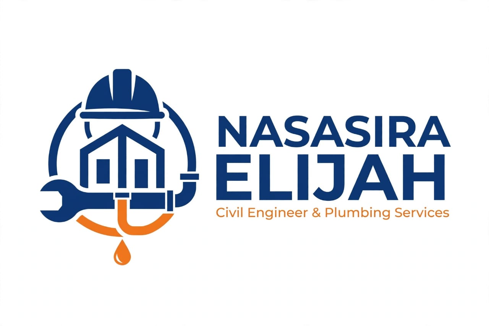
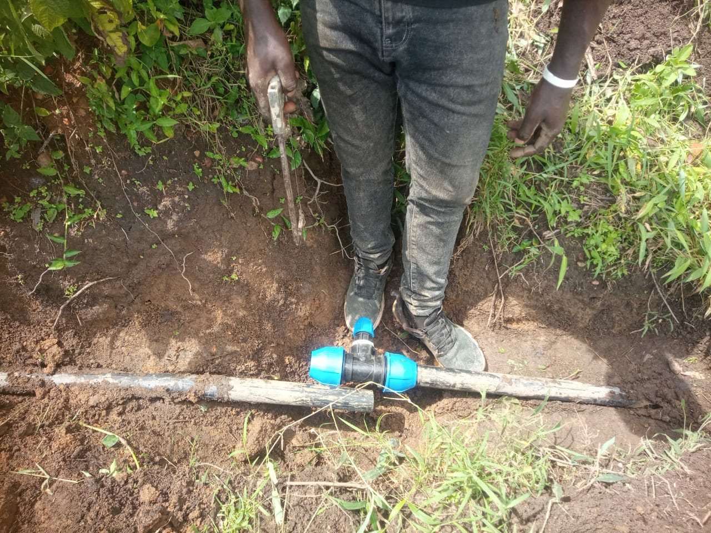
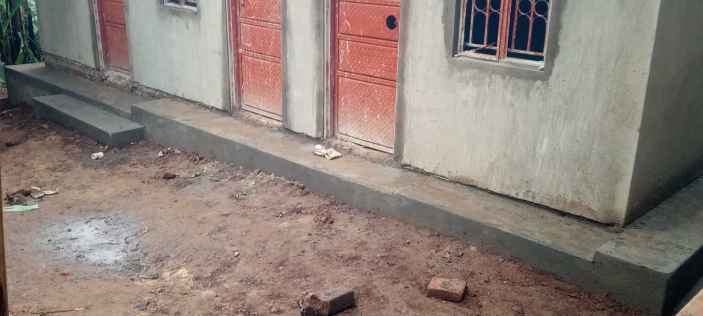
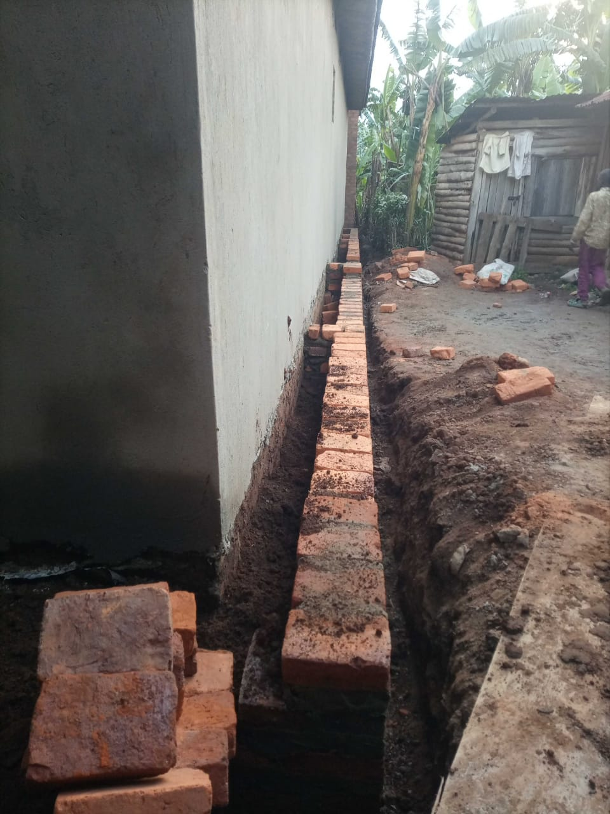

Building &
development
- Residential & commercial construction
- House renovations & extensions
- Foundation works & roofing
- Plastering, painting, flooring & tiling
- Boundary walls, fencing & site works
- Drainage works

SENIOR CIVIL ENGINEER · CONSTRUCTION · PLUMBING
Nasasira Elijah delivers construction works and plumbing services with quality workmanship, professional service and customer satisfaction.
Nasasira Elijah is a Senior Civil Engineer providing construction works and plumbing services for residential and commercial projects.
From foundations and renovations to water supply, drainage and repairs, we bring professional service and a focus on customer satisfaction.
Discuss your project ↗Quality construction and dependable plumbing, tailored to your home, business or site.
A look at recent construction and water work, captured on site by our team.








Senior Civil Engineer
Professional construction works and plumbing services, guided by quality, reliability and customer satisfaction.
Work with Nasasira ↗Call or message to discuss your construction or plumbing project. Fast, reliable and affordable service.